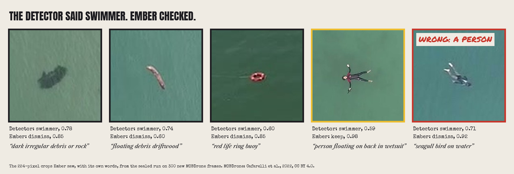

A trained detector flags every second of a drone flight. Muse Ember checks each flag and says what it is.
On 300 MOBDrone frames, the detector alone and the detector with Ember both found 210 of 297 labeled person appearances. Ember’s check cut false alarms from 166 to 38. Kept flags carry Ember’s description into the handoff, and dismissed flags stay in the report for review.
Everything on these pages replays recorded Muse Ember runs, so clicking around costs nothing.
MOBDrone · 300 frames · 297 labeled person appearances
FoundFalse alarms
Detector aloneset to find as many, confidence 0.30210166
Detector, then EmberEmber checks every flag21038
Detector aloneset to about as few alarms, confidence 0.6212536
AFO · 300 photos · 2,950 labeled person appearances
FoundFalse alarms
Detector alonepost hoc comparator, confidence 0.05611445
Detector, then EmberEmber checks every flag61985
python probe/open_water_search.py flight.mp4 --mode detector-check --detector-python detector-venv/bin/python --out resultsEach plan and pass rule was committed before its run. MOBDrone cost $0.0318 and AFO cost $0.0706. The AFO rule required a detector setting that reached 619. The detector topped out at 611, so we chose that comparator after seeing the result. The same check lost on SeaDronesSee, the footage the detector was trained on.
The detector said swimmer. Ember checked.
The free YOLO26m detector, trained on SeaDronesSee, flags every swimmer-shaped spot in a frame, up to 12. Ember gets one request per flagged frame, with each flag as a numbered 224-pixel crop. Structured output makes it answer three things for every crop: is a person in the water at its centre, how sure is it, and what is there.

The crops Ember saw and its own words, from the sealed run. The last one is a person Ember dismissed as a seagull. MOBDrone: Cafarelli et al., 2022, CC BY 4.0.
Where it did not help. On 1,517 SeaDronesSee validation photos, the detector’s own kind of footage, the check found 3,904 people with 291 false alarms. Raising the detector’s threshold found 3,910 with 104. So the detector does the first pass, and Ember earns its keep on water the detector doesn’t know.
What it gets wrong. Both versions still miss 87 of the 297. Ember dismissed 40 flags that were real people, so the report keeps every dismissed flag with its crop and Ember’s words.
How far it reaches. Two datasets the detector never saw: 300 new MOBDrone frames, and 300 AFO photos from 17 source clips, where only people in the water count. Other footage is untested. The AFO run keeps 991 of the 1,101 flags on people and dismisses 768 of the 850 that aren’t.
The one command reproduces it. Run on the same frames with Ember’s sealed answers replayed, --mode detector-check sent all 207 requests byte for byte as sealed and scored 210 found with 38 false alarms.
Replay the two-minute detector check
On November 24 the detector ran on every second of a MOBDrone clip. Ember checked each flag, and the command printed its verdicts and the resulting handoffs. Open the eight handoff messages.
Swimmers can still be present in seconds with no detector flags or only dismissed flags. The offline replay uses the saved boxes and replies at $0 in new charges. It reproduces the queue and coverage byte for byte and verifies all eight handoffs and 115 crop links. The recorded 57 seconds and $0.0080 are from the original run with 99 Ember requests. Reproduce the run and trace a crop · Earlier detector-check run.
Same clip, 116 labeled person appearances
Found
False alarms
Possible people, for 4 labeled
Original cost
Detector alone, as published (0.25)
114
1
not run
$0
Detector, then Ember
101
0
8
$0.0080
Ember-only search (historical)
107
47
15
$0.0531
On this clip the detector alone did best. It raised one false alarm in two minutes. Ember’s check dismissed 13 real sightings, calling eight of them a duck, a bird, a seal or a dolphin, four a person away from the center of the crop, and one a dark floating shape.
The check recorded 101 sightings. They merged into 8 possible people for the clip’s 4 labeled people. Each entry holds a labeled person. The merge rule split two of the people across multiple entries.
Handoff messages from the detector check
Pick a possible person to read the recorded handoff.
#Seen during the flight, 0:00 to 2:00Labeled person
Handoff message
Loading the recorded handoffs…
Why the current check stays
We tested a rule that would restore the detector’s original pin when Ember dismissed it but described a person away from the crop’s center.
Two sealed replacement clips. Both versions found 2 of 2 distinct tracks, with 20 correct original pins and 1 false pin in 1 episode. The rule never fired, adding 0 correct pins and 0 false pins. The gate required at least one correct restoration and zero added false pins, so the current detector check stays. Sealed result.
Eight exploratory clips. The current check found 6 of 7 distinct tracks with 29 false pins in 14 episodes. The retrospective replay restored 4 correct pins and added 0 false pins. It reached 7 of 7 tracks with the same false-pin and episode counts. The current check still misses one person in clip 0011 (DJI_0804_0011_30m_2), where it dismissed three matching detector pins at seconds 11–13.
Historical replay of the Ember-only search
In the first approach, Ember searched the same clip on its own. One look at the whole frame ranked its nine sections, then Ember took close looks at the top two. It returned 15 possible people, 7 with no labeled person.
A two-minute MOBDrone flight searched live on November 24, one frame per second. Above: Ember’s decisions as the command printed them. Below: the coverage timeline, one column per second and one cell for each of the frame’s nine sections, top left first.
All 1,547 SeaDronesSee validation photos, searched as one flight
The historical Ember-only search gave every photo one overview and two close looks, up to 8 requests at once, under a $1.47 spending cap.
Swimmers found
3,876 of 6,206 (62%). 2,330 missed.
Marks with no swimmer
874
Cost
$0.9571 for 4,641 calls, about $0.00062 per photo. At one photo a second, about $2.23 per hour of footage.
Speed
35.1 photos a minute over the 44-minute run, short of the 60 a minute needed to keep pace with one photo a second. The live clip ran at 46.9.
Reliability
Every overview was read, with no lost requests and no unreadable answers.
Ember alone loses to the trained detector
A YOLO26m detector trained on SeaDronesSee ran locally on the same photos, scored under the same rule. It found more people with fewer false marks on both tests. On SeaDronesSee its checkpoint was chosen on this same validation split, so those numbers lean optimistic. MOBDrone is footage neither had seen, and the detector still won.
SeaDronesSee validation, 1,547 photos
Swimmers found, of 6,206
Trained detector4,283
Ember3,876
Marks with no swimmer
Trained detector144
Ember874
MOBDrone, 300 frames new to both
People found, of 311
Trained detector228
Ember205
Marks with no person
Trained detector194
Ember232
The detector ran two ways, on the whole photo and on the same 3 × 3 tiles Ember uses, and the better run is shown: the whole photo, on both sets. Its tiled run found 4,213 with 408 false marks on SeaDronesSee and 217 with 400 on MOBDrone. A mark counts when it lands inside a labeled box, each box once, at most five per photo. Ember’s false-mark bars use the same scale on both sets.
What Ember’s own search still offers
No training data. Without task-specific fine-tuning, Ember found 205 of 311 people on footage new to it. Nothing has to be labeled or trained before a new camera or stretch of water can be searched.
A search record and handoff a crew can act on. A flight comes back as possible people with times, a coverage timeline that shows the water nobody searched, and a handoff message for each possible person.
A measured, capped cost. About $0.00062 per photo, about $2.23 per hour of footage at one photo a second. The detector runs free on a local GPU. The tool stops before any request could cross its spending cap.
Two checks on the 30 validation photos
Meta’s grounding format became the default. Asking for points on Meta’s 0–1,000 grid found 69 of 134 swimmers with one close look and 79 with two, with 13 marks on no swimmer. It had to reach 63, 74 and at most 24.
Letting Ember choose its own close looks lost. At equal spend, agent mode found 54 swimmers against the fixed method’s 79. Each tool-calling step resends the frame’s conversation, so the same money bought 51 calls instead of 90, and 9 of the 30 photos never got a close look. The fixed method stays the default, and agent mode stays available with --mode agent.
134 swimmers, equal spend
Found
Marks with no swimmer
Calls
Fixed method, grounding format
79
13
90
Agent mode
54
11
51
How each second gets searched
Shown on SeaDronesSee validation frame 2, from the first recorded runs.
One look at the whole frame
Ember splits the frame into a 3 × 3 grid and ranks the nine sections by how likely each is to hold a person in the water.
Close looks at the top sections
Ember gets a full-resolution crop of each top-ranked section and marks anyone it sees. The tool reserves each request’s worst-case cost against the spending cap before sending it.
Coverage the next person can trust
Each mark becomes a pin on the full frame. Sections that never got a close look stay shaded, and the coverage timeline keeps them for every second of the flight.
Where the first close look goes
A fixed grid opens sections in a preset order. Ember opens the ones it ranked highest. On this frame, that difference decides whether anyone gets found.
Across 30 validation frames Ember had never seen, with 134 swimmers
One close look per frame
Ember picks the tile63–64
Always zoom the center30–31
Fixed grid order7
Two close looks per frame
Ember picks the tile74
Always zoom the center31–33
Fixed grid order16
These runs used the original frozen prompts. Every row uses the same recorded Ember answer for each crop, so only the order of the close looks differs. Ranges cover two passes over the frames. With all nine tiles opened, every order finds 77–78, so the gain comes from where the first looks go. The measure and its pass rule were written down before any call.
Why the unchecked water matters
On July 4, 2021, a Glendale, Wisconsin police drone found two paddleboarders on Lake Michigan and held a light on them while boats came in. The crew could reach the boats only through dispatch. Later, the officer told us:
“Honestly, we didn’t know if the boats knew.”
Finding someone is half the job. The other half is making sure the next person knows exactly where to look, and which water nobody has checked.
Run it on your own flight
pip install pillow
export MODEL_API_KEY=your-meta-model-api-key
python probe/open_water_search.py flight.mp4 --out results --budget 0.10
open results/report.html
# Detector first, then Ember checks every flag
python -m venv detector-venv && detector-venv/bin/pip install ultralytics==8.4.218
python probe/open_water_search.py flight.mp4 --mode detector-check --detector-python detector-venv/bin/python --out results --budget 0.10
The flight can be a video, cut into one frame per second with ffmpeg, or a folder of photos one second apart. You get search-record.json with the possible people, the coverage timeline and every handoff message, a report page built from it, and calls.jsonl with every request and its cost. Add --mode agent to let Ember choose its own close looks.
What this does not show yet
Detector, then Ember has passed on new MOBDrone frames only. On SeaDronesSee, the detector’s own footage, it lost to the detector’s threshold.
The historical Ember-only search processed 35.1 photos a minute on the scale run and 46.9 on the two-minute clip.
The live clip carried no drone position, so its handoff messages give the time and the section of the frame. They give no map coordinates.
When Ember and a fixed grid each used their own answers at equal spend, the totals came out 78 to 77, within Ember’s own variation between passes.
There is no claim that a reviewer finds people faster. That needs a timed test on fresh footage.
Built during the Muse Ember Hackathon, starting November 23, 2026. Photos and labels: SeaDronesSee (CC0), by Varga, Kiefer, Messmer and Zell. Unseen footage: MOBDrone (CC BY 4.0), by Cafarelli et al., arXiv 2203.07973. The public repository includes redacted Ember traces for the published comparisons. The sealed replacement inputs are private.